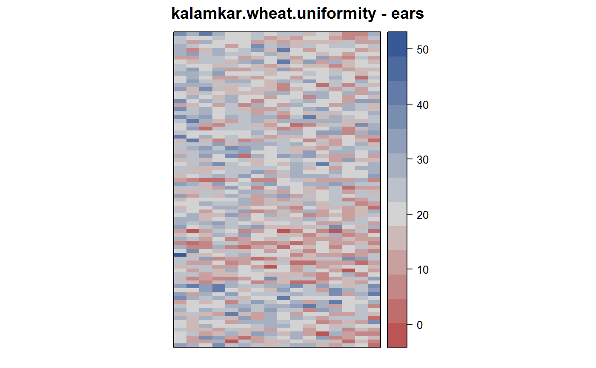
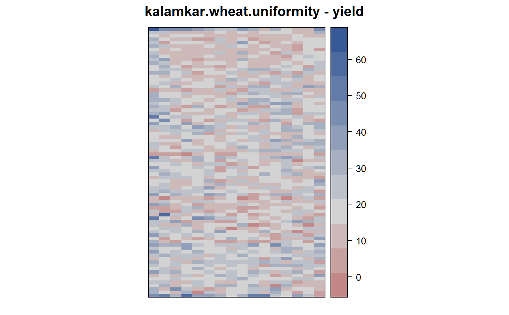

kalamkar.wheat.uniformity.RdUniformity trial of wheat at Rothamsted, UK in 1931.
data("kalamkar.wheat.uniformity")
A data frame with 1280 observations on the following 4 variables.
rowrow
colcolumn
yieldyield, grams/half-meter
earsears per half-meter
Kalamkar's paper published in 1932. Estimated crop year 1931.
Plot 18 of the Four Course Rotation Experiment, Great Hoos, at Rothamsted, UK was used. Sown with Yeoman II wheat.
Field width = 16 segments * 0.5 meters = 8 meters.
Field length: 80 rows * 6 inches apart = 40 feet.
The grain yield and number of ears for each half-meter length were recorded. This is quite a small field, only 1/40 acre in size.
Edge rows have higher yields. Row-end units have higher yields than interior units. These border effects are significant. Variation between rows is greater than variation within rows. Negative correlation between rows may indicate competition effects.
For ears, Kalamkar discarded 4 rows from each side and 3 half-meter lengths at each end.
Kalamkar suggested using four parallel half-meter rows as a sampling unit.
Note, the Rothamsted report for 1931, page 57, says: During the year three workers (F. R. Immer, S. H. Justensen and R. J. Kalamkar) have taken up the question of the most efficient use of land in experiments in which an edge row must be discarded...
Kalamkar, R. J (1932). A Study in Sampling Technique with Wheat. The Journal of Agricultural Science, Vol.22(4), pp.783-796. https://doi.org/10.1017/S0021859600054599
None.
library(agridat) data(kalamkar.wheat.uniformity) dat <- kalamkar.wheat.uniformity plot(yield ~ ears, dat, main="kalamkar.wheat.uniformity")#> [1] 24112.5#> [1] 25850libs(desplot) desplot(ears ~ col*row, dat, flip=TRUE, aspect=(80*0.5)/(16*1.64042), # true aspect main="kalamkar.wheat.uniformity - ears")desplot(yield ~ col*row, dat, flip=TRUE, aspect=(80*0.5)/(16*1.64042), # true aspect main="kalamkar.wheat.uniformity - yield")# Show the negative correlation between rows ## libs(asreml) ## libs(lucid) ## dat <- dat ## arrange(rowf,colf) ## m1=asreml(yield ~ 1, data=dat, rcov= ~ ar1(rowf):ar1(colf)) ## vc(m1) ## ## effect component std.error z.ratio constr ## ## R!variance 81.54 3.527 23 P ## ## R!rowf.cor -0.09465 0.0277 -3.4 U ## ## R!colf.cor 0.2977 0.02628 11 U